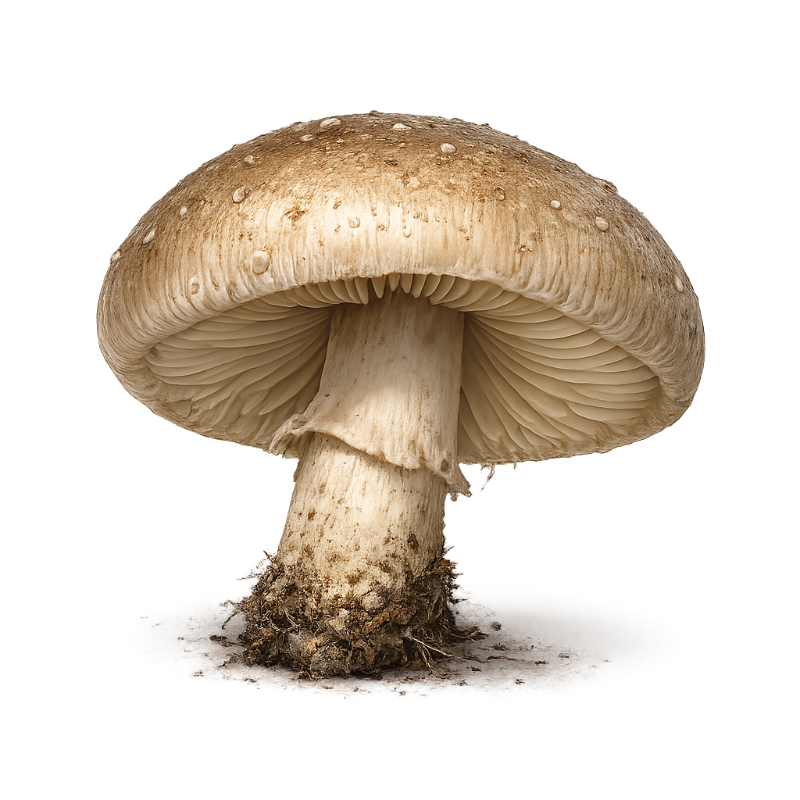

The Producers of Suffering
an article about pathogens
What is a Pathogen?
Pathogens are microorganisms, however not all of them fall under the term: "Living-Microorganism"
"Whats a Non-Living Microorganism then?"
oh further more, not all Pathogens remain microscopic either! some get large enough to be seen with the naked eye, hence becoming Non-microscopic, more on that later!
Pathogens are just regular microorganisms living in their own little world, infact they can cause illnesses, spread diseases, to humans, animals, and plants!
Whilist most of them tend to only infect one kind of something, they can jump from species to species! for example, animal to human,
a bird carrying an infection to a human....Plague inc reference???
Fun Fact: Pathogens have to deal with deal with other pathogens aswell; "see more"
TYPES
e.g. mushrooms, toadstools, yeasts, mould, etc
Some fungi look like plants, but are not really plants,
since they can't make their own food by using chlorophyll(they dont have it!).
Therefore they have to feed on other organic matter.
They spread through the air and the environment in spores
"Wantta learn more about fungi?"

e.g. Escherichia coli(E. coli), Vibro cholerae, Yersinia pestis, etc
single-cell microorganism. one bacteria = bacterium.
Theres Millions or even more different types of bacteria that can be found.
They are EVERYWHERE, from your skin, airways, mouth, to sitting on your phone, floor, toilet,
and the list goes on and on and on.
"Wantta learn more about bacteria?"